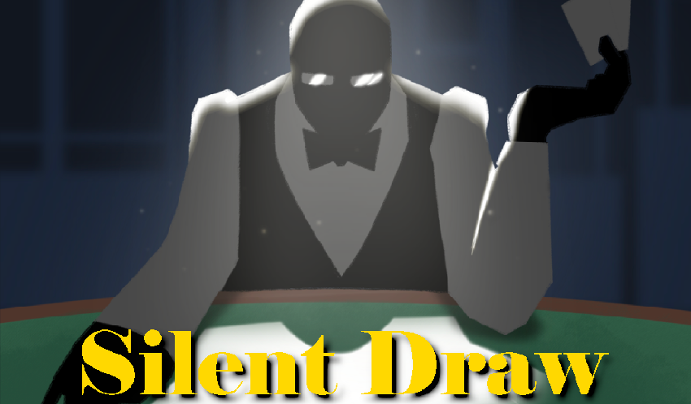

About Me
I'm a 20 year old game developer, coder, and miscellaneous thing-doer from Western Ohio.
I'm highly feedback driven, with a commitment to user experience and a passion for nitty-gritty mechanical design.
Contact and Links
Places to find me and ways to get in touch.
Original Works
Cosmic League Baseball
A competetive trading card game and worldbuilding project set in a retrofuturistic galaxy where baseball has replaced all conflict.
Read the 50 page Narrative Design Document here:
Download in a Print and Play format here:
Rulebook
All Cards (Two starter decks)
Silent Draw
A roguelike deckbuilding stealth game created in Unity, set in a sprawling casino. Use cards representing tools and abilities to sneak past guards.
The game was developed as part of a Game Jam style class to create a unique indie game in a short amount of time. Full credits can be found on the itch.io page.
View and download the game on itch.io.Tamer Tournament
A tabletop drafting game inspired by the Auto-Battler genre, where players assemble and train a team of creatures as part of a tournament bracket.
The game features 96 unique cards and gameplay that's easy to learn, but with enough depth to encourage replaying and mastering its mechanics.
The game is currently in a playtesting phase, with a final goal of being pitched to a tabletop games publisher.
Download in a Print and Play format here:Rulebook
All Cards
Other Code Projects
Frogger GML Port
A port of the classic arcade game Frogger to GML. Created in collaboration with Aiden Pearson. You can play it right in your browser above!
Or, download it on Github here.
Fan Works
Viridian's Last Mission and Revolution

Viridian's Last Mission is a fan-made expansion for Magic: the Gathering based on classic Spy films and supervillain troupes. It features three original keyword mechanics, 276 original cards, full art and flavor text, and support for Draft, Sealed, and Constructed play. It's been playtested and refined for more than a year and has had collaborative input from a full community of fellow designers and playtesters.
Viridian's Last Mission is also part of the fanmade Constructed format Revolution: Custom Standard. I serve as a curator and organizer for the format, which has more than 50 active players each month. The curator team has the responsibility to organize monthly "Grand Prix" events and balance the format in response to card and deck performance.
View the full set, and the rest of Revolution in a searchable format here.
Draft the set online with AI here.
Or view the Design Document here.
2022be
Another Magic project made as part of this community, the 2022be is a self-contained draft enviornment with a comedic tone, in which one card was shared every single day of 2022, ending with 365 cards.
You can learn more about the 2022be on its dedicated website at 22be.net.
Site last updated 12/14/21